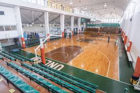

Analista Programador Universitario
Institución: Universidad Nacional de La Matanza (UNLaM) — Departamento de Ingeniería e Investigaciones Tecnológicas.
Carrera universitaria de pregrado orientada a formar profesionales capaces de analizar, diseñar, desarrollar y mantener sistemas de información.
Período
Marzo 2024 - En curso
Competencias adquiridas
- Análisis y diseño de sistemas de información
- Programación orientada a objetos y estructuras de datos
- Modelado de bases de datos relacionales y SQL
- Desarrollo de aplicaciones web (HTML, CSS, JavaScript)
- Fundamentos de redes y sistemas operativos
- Metodologías ágiles y trabajo en equipo
Imágenes de la institución
